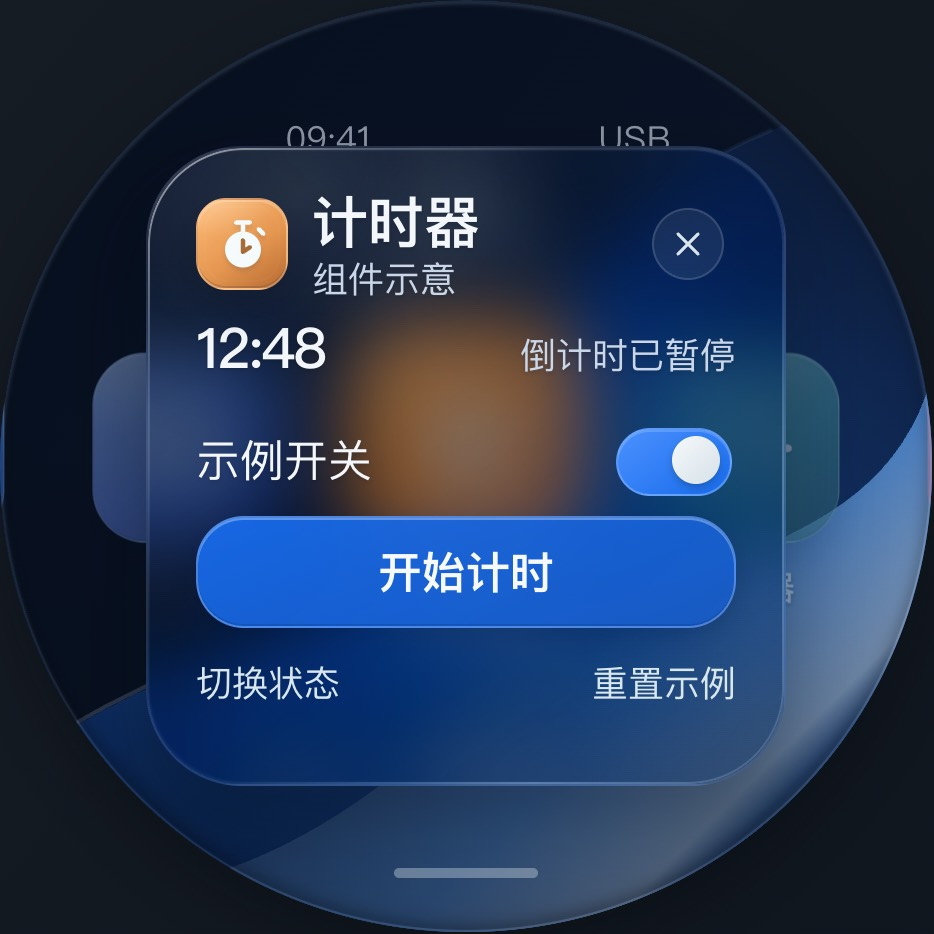
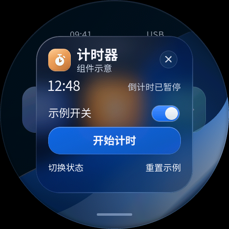
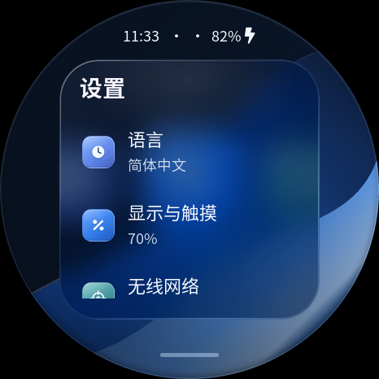
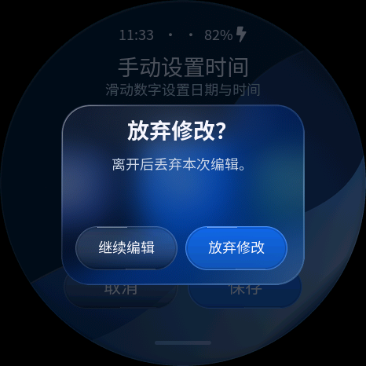
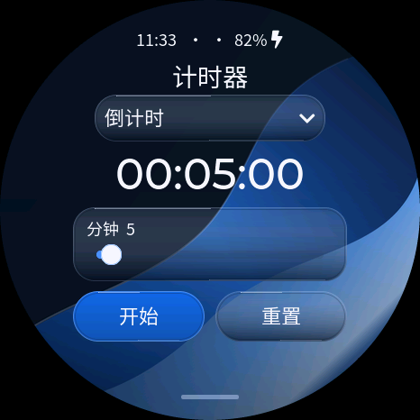

历史记录：此页为 Blue 2.1 居中面板方案。当前应用已改为全屏黑底，查看 Blue 2.2 最新效果。
同一逻辑尺寸 466 × 466。左侧为你提供的原图，右侧为当前 C++ / LVGL 模拟器实际渲染；原图按相同比例显示。组件示意中的数据与开关仅用于对照，不会启动真实计时服务。


文字、数字、开关、计时操作及弹窗仍是可交互控件。玻璃的柔光、模糊色层和边缘高光已离线生成设备资源。
保留的差异：开源字库与参考图系统字体存在细微字形差异；RGB565 会有轻微量化纹理。尚未烧录设备，截图不代表实机色彩与帧率已验收。
查看对照检查记录 · 查看构建与测试


